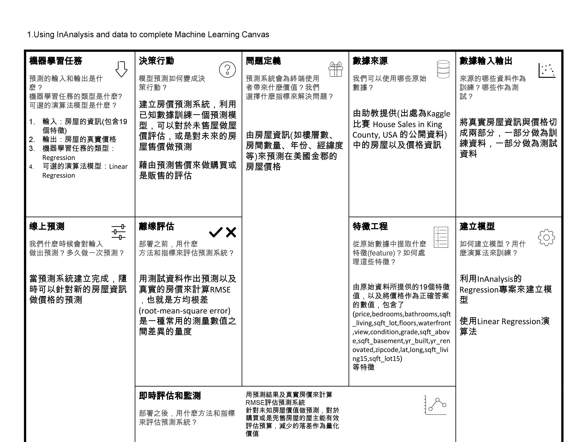
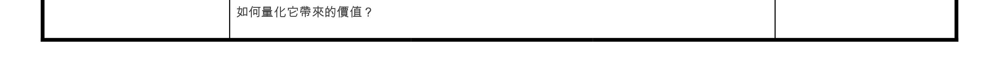
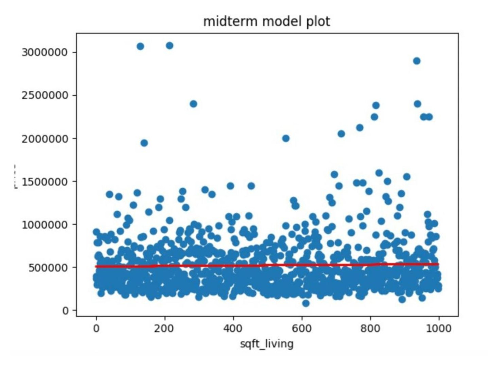
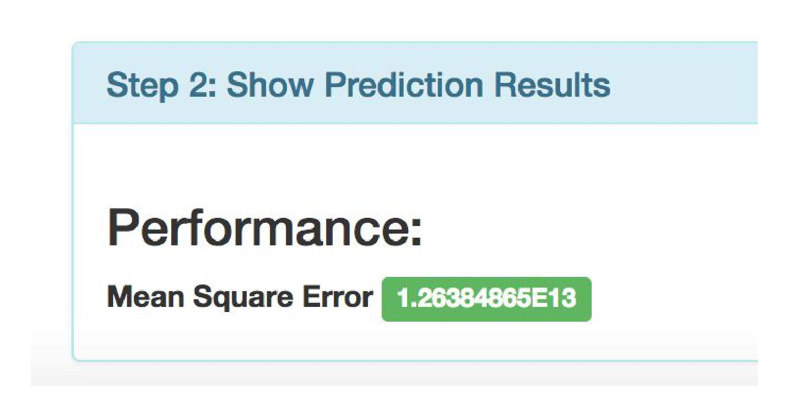

<!-- Post Content -->
<article>
    <div class="container-fluid">
        <div class="row">
            <div class="col-lg-8 col-md-10 mx-auto">
                <a href="review_index.html" class="btn btn-info btn-lg">
                    <span class="glyphicon glyphicon-menu-left"></span>Back to User Reviews List
                </a>
            </div>
        </div>
        <div class="row">
            <div class="col-lg-2 col-md-2 mx-auto">
                <section class="main">
                    <ul class="ch-grid">
                        <li>
                            <a href="review_3.html">
                                <div class="ch-item ch-img-3">
                                    <div class="ch-info">
                                        <h3>秦暐峻</h3>
                                        <p>臺大工程科學與海洋工程研究所</p>
                                    </div>
                                </div>
                            </a>
                        </li>
                    </ul>
                </section>
            </div>
            <div class="col-lg-6 col-md-8 mx-auto">
                <h2 class="section-heading">Regression學習紀錄</h2>
                <hr>
                <h3>秦暐峻 | 臺大工程科學與海洋工程研究所</h3>
                <p>
                    InAnalysis讓機器學習變得簡單明瞭,即使是新手也能得心應手
                </p>
            </div>
        </div>
        <div class="row">
            <div class="col-lg-8 col-md-10 mx-auto">
                <h2 class="section-heading">The Machine Learning Canvas</h2>
                <hr>
                
                

                <h2 class="section-heading">Training result</h2>
                <hr>
                
                <p>在模型的訓練上，我採用了Linear Regression，參數的部分則是用了預設的參數(Fit Intercept: true, Normalize: false, Copy X: true, N
                    jobs:1)，而在資料的處理上，我們將price設定為label，而在其他的特徵值上，我有嘗試將不同的特徵值做調整，但訓練後預測的結果上都沒有比較理想，MSE算出來的誤差結果都不會比較理想，所以最後採用的模型就是在前處理的部份並沒有做調整，特徵擷取的部分則是擷取了所有的特徵值。
                    在房屋價格的預測上，可以看到訓練出來的結果，大部分訓練出來的預測值會落在較平均的值，相信也是因為要減少誤差值的關係，所以收斂出來的圖幾乎是在大多房價的平均值。</p>

                <h2 class="section-heading">Prediction result</h2>
                <hr>
                
                <p>
                    在房屋價格的預測上，可以看到預測結果的MSE算出來大約為1.26E13，我認為這個結果不算理想，而在我調整的其他model上，我將例如sqft_lot這個特徵值先做normalize，而預測出來的誤差值會變高到1.3E14，並沒有比較好，而我也有嘗試將不同的值去做前處理，像是將特徵值數值範圍較大的特徵都進行normalize，但結果反而會變差，MSE甚至會高到1.6E15，相信可能在這些特徵值上，數值的高低落差都具有一定的參考性，若我們將數值給打平反而預測出來的結果會較差。
                    在房價的預測中，有些特徵值例如是經緯度，可能不見得跟價格呈現線性的關係，有可能是較相近的值會有差不多的價格表現，在這些特徵值中，相信我們需要做細膩的前處理，又或者像是用XGB的方法去做，可以得到更好的預測結果。</p>
                <a href="review_index.html" class="btn btn-info btn-lg">
                    <span class="glyphicon glyphicon-menu-left"></span>Back to User Reviews List
                </a>
            </div>
        </div>
    </div>
</article>